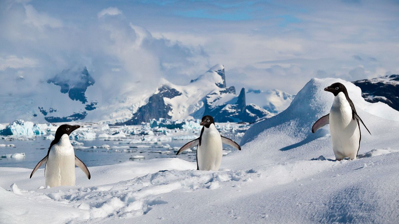

Pinguins na Antártida
Descubra como essas aves incríveis sobrevivem no lugar mais gelado do planeta.

+500 mil
pinguins morrem por ano
devido à perda de habitat
+2°C
de aquecimento global
-70%
declínio populacional
O pinguim imperador é a maior espécie de pinguim, conhecido por sua resistência ao frio extremo e por ser o único que se reproduz durante o inverno antártico. Eles podem atingir até 1,2 metros de altura e pesar até 40 kg.

O pinguim Adélia é uma das espécies mais comuns na Antártida, conhecido por seu bico curto e plumagem preta e branca. Eles são ágeis nadadores e se alimentam principalmente de krill e peixes.

O pinguim Gentoo é facilmente reconhecível por sua faixa branca na cabeça e bico laranja. Eles são conhecidos por serem os pinguins mais rápidos, podendo nadar a velocidades de até 36 km/h.
O pinguim Barbicha é conhecido por suas penas longas e finas que se assemelham a uma barba. Eles são encontrados principalmente nas ilhas subantárticas e são conhecidos por sua vocalização distinta.
.jpg)
O pinguim Macaroni é facilmente reconhecível por sua crista amarela brilhante. Eles são conhecidos por serem os pinguins mais barulhentos e podem ser encontrados em grandes colônias nas ilhas subantárticas.
🧊 1. Onde vivem os pinguins?
Muitos pinguins vivem em ilhas geladas do Hemisfério Sul, como a Antártida e regiões subantárticas. Alguns até gostam de lugares mais "quentes", como a costa da África do Sul e América do Sul!
🐧 2. Quantos pinguins existem na Antártida?
Estima-se que existam mais de 12 milhões de pinguins Adélia só na Antártida! Eles vivem em colônias que parecem verdadeiras cidades de pinguins!
💔 3. Aquecimento Global em ação
A mudança climática já está afetando os habitats dos pinguins. O derretimento do gelo reduz os locais seguros para reprodução e dificulta a busca por alimento.
🌊 4. Mergulhadores profissionais
Pinguins Gentoo podem nadar a até 36 km/h, sendo os nadadores mais rápidos entre todas as espécies de pinguins!
❤ 5. Pinguins são românticos!
Muitos pinguins formam casais para a vida toda. O macho costuma "presenteá-la" com uma pedra — um verdadeiro gesto de amor entre pinguins!
📦 6. Eles não têm medo de humanos Como nunca foram caçados por humanos na Antártida, os pinguins costumam ser super curiosos e não têm medo de se aproximar.
Essas curiosidades são só a ponta do iceberg! ❄️😉
.jpg)
Orca
Embora não se alimente exclusivamente de pinguins, as orcas são superpredadoras e podem capturá-los na água.
.jpg)
Leopardo-marinho
Um dos predadores mais perigosos dos pinguins, especialmente na Antártida.
.jpg)
Skua
É uma ave predadora que ataca ovos e filhotes de pinguins quando os pais estão distraídos ou ausentes.
Quero saber o que você achou do meu site e dos pinguins!